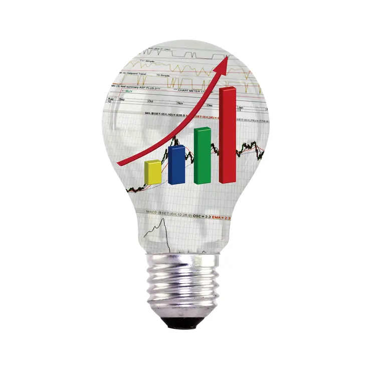

Côte d'Ivoire · Afrique de l'Ouest
Guidons vos ambitions vers les sommets.
Conseil stratégique, gouvernance, développement économique et innovation pour accompagner les organisations vers une croissance durable et créatrice d'impact.

La compagnie
Une compagnie de conseil au service de la transformation et de la performance.
PRIME ADVISORS SB, Inc. est une compagnie privée établie en Côte d'Ivoire. Elle accompagne décideurs publics, dirigeants d'entreprises, investisseurs et institutions dans la définition et la mise en œuvre de stratégies de croissance durable, et intervient également dans la sous-région ouest-africaine.
Notre expertise couvre les dimensions stratégiques, opérationnelles, organisationnelles et digitales, avec pour objectif d'améliorer la performance, la compétitivité et la résilience des organisations.
- Rigueur dans l'analyse
- Vision dans l'action
- Recherche d'un impact durable
Nos expertises
Quatre domaines d'intervention, une même exigence.
Nos équipes interviennent sur les leviers qui déterminent la trajectoire d'une organisation : la décision, la structure, la croissance et la technologie.
Conseil stratégique
Arbitrer, prioriser et transformer les décisions structurantes en résultats.
DécouvrirGouvernance
Structurer la décision, sécuriser l'exécution, renforcer les équipes.
Découvrir
Développement économique
Objectiver le potentiel des territoires et des filières, puis le financer.
DécouvrirInnovation & Transformation numérique
Moderniser sans fragiliser : les usages d'abord, la sécurité à chaque étape.
DécouvrirCarrousel des quatre expertises. Utilisez les flèches gauche et droite du clavier, ou faites glisser les cartes, pour passer d'une expertise à l'autre.

Notre promesse
De la vision à l'action, nous transformons les ambitions en résultats durables.
Nos solutions
Quatre programmes pour accélérer votre performance.
Chacun traduit nos expertises en interventions concrètes.
- Renforcer votre gouvernance et votre leadership Gouvernance d'entreprise · Audit et contrôle interne · Capital humain
- Stimuler la croissance économique et le développement territorial Diagnostics stratégiques · Plans de développement · Marketing territorial
- Réussir votre transformation numérique Transformation digitale · Intelligence artificielle · Cybersécurité
- Piloter efficacement vos projets stratégiques PMO · Programmes et portefeuilles · Suivi-évaluation

Pourquoi PRIME ADVISORS ?
Ce qui distingue notre accompagnement.
- Une expertise en stratégie, gouvernance et transformation
- Une parfaite compréhension des réalités africaines et des standards internationaux
- Une approche orientée résultats et impact mesurable
- Une maîtrise des technologies émergentes, notamment l'intelligence artificielle
- Un accompagnement de proximité, de la réflexion stratégique à l'exécution
Rayonnement
Une expertise africaine, une ouverture internationale.
Établie à Abidjan, la compagnie intervient dans la sous-région ouest-africaine et mobilise, selon les mandats, un réseau de cabinets conseils de calibre international.
- Côte d'IvoireSiège : Cocody, Abidjan
- Afrique de l'OuestInterventions en sous-région
- AfriqueRéalités et contextes locaux
- InternationalRéseau de cabinets partenaires

Prochaine étape
Vous avez un projet stratégique ?
Parlons de vos enjeux et construisons ensemble les prochaines étapes.